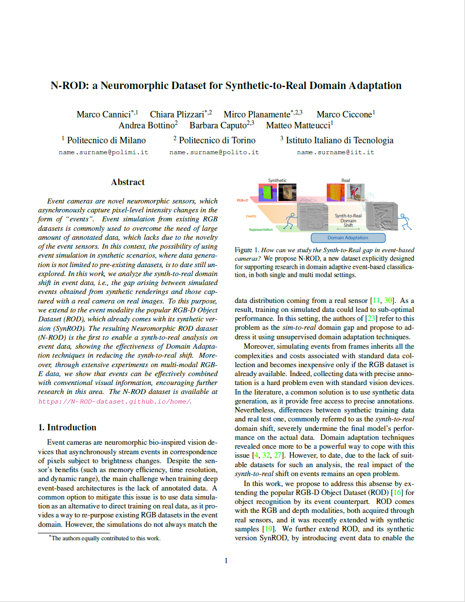

Abstract: Event cameras are novel neuromorphic sensors, which asynchronously capture pixel-level intensity changes in the form of "events". Event simulation from existing RGB datasets is commonly used to overcome the need of large amount of annotated data, which lacks due to the novelty of the event sensors. In this context, the possibility of using event simulation in synthetic scenarios, where data generation is not limited to pre-existing datasets, is to date still unexplored. In this work, we analyze the synth-to-real domain shift in event data, i.e., the gap arising between simulated events obtained from synthetic renderings and those captured with a real camera on real images. To this purpose, we extend to the event modality the popular RGB-D Object Dataset (ROD), which already comes with its synthetic version (SynROD). The resulting extended dataset is the first to enable a synth-to-real analysis on event data. On the proposed Neuromorphic ROD dataset (N-ROD), we show how Domain Adaptation techniques can be used to reduce the synth-to-real gap, thus enabling to take full advantage of automatically generated synthetic data during training. Moreover, through extensive experiments on multi-modal RGB-E data, we show that events can be effectively combined with conventional visual information, encouraging further research in this area.
|  |
Citation
|
|
|